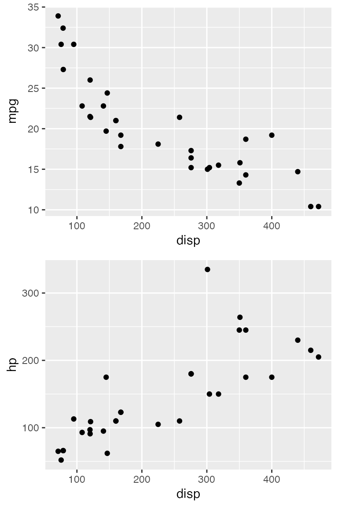
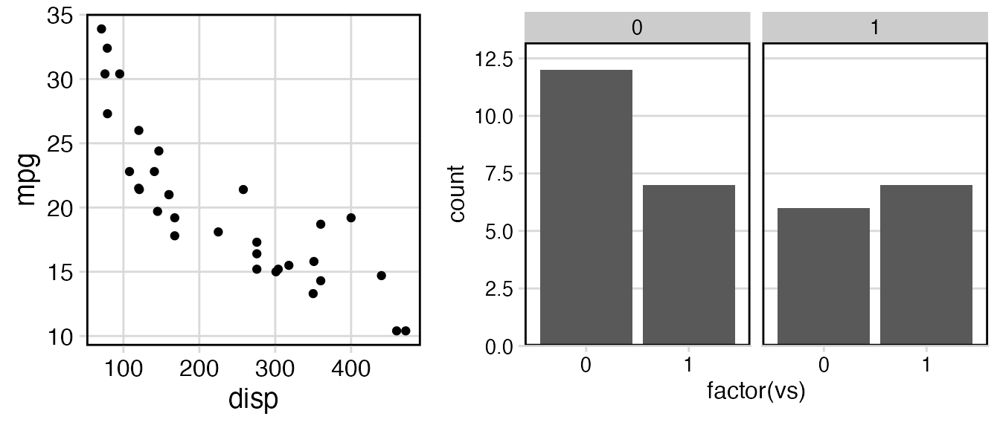

Aligning plots
Claus O. Wilke
2019-07-11
aligning_plots.RmdThere are several packages that can be used to align plots. The most widely used ones beside cowplot are egg and patchwork. All these packages use slightly different approaches to plot alignment, and the respective approaches have different strengths and weaknesses. If you cannot achieve your desired result with one of these packages try another one.
Most importantly, while egg and patchwork align and arrange plots at the same time, cowplot aligns plots independently of how they are arranged. This makes it possible to align plots and then reproduce them separately, or even overlay them on top of each other.
We’ll start with a very simple example. Let’s consider these two plots.
library(ggplot2)
library(cowplot)
p1 <- ggplot(mtcars, aes(disp, mpg)) +
geom_point()
p2 <- ggplot(mtcars, aes(disp, hp)) +
geom_point()
p1Both plots have the same x axis, but the width of the plot area is slightly larger in the first than in the second, because the y axis labels have different lengths. These differences in plot width could be distracting in a document where both plots are shown near each other. We can fix this problem by vertically aligning the two plots and then drawing them individually.


Vertical alignment (align = "v") means that any vertical reference lines, such as the right and left y axis lines, are aligned in the plots. By contrast, horizontal alignment (align = "h") aligns horizontal reference lines. Both types of alignment can be used separately (align = "v" or align = "h") or in combination (align = "vh" or align = "hv").
If we want to align and then arrange plots, we can call plot_grid() and provide it with an align argument. The plot_grid() function calls align_plots() to align the plots and then arranges them.

Aligning by axis
The vertical and horizontal alignment as described above tries to align every vertical or horizontal element in all plots. In other words, the axis titles are aligned to each other, the axis ticks are aligned to each other, the plot panels are aligned to each other, and so on. This method of alignment only works if all plots have exactly the same elements. Therefore, it fails, for example, if we try to align a plot that is faceted with one that is not.
p1 <- ggplot(mtcars, aes(disp, mpg)) +
geom_point() +
theme_minimal_grid(14) +
panel_border(color = "black")
p2 <- ggplot(mtcars, aes(factor(vs))) +
geom_bar() +
facet_wrap(~am) +
scale_y_continuous(expand = expand_scale(mult = c(0, 0.1))) +
theme_minimal_hgrid(12) +
panel_border(color = "black") +
theme(strip.background = element_rect(fill = "gray80"))
plot_grid(p1, p2, align = "h", rel_widths = c(1, 1.3))## Warning: Graphs cannot be horizontally aligned unless the axis parameter is
## set. Placing graphs unaligned.
We receive a warning that the plots cannot be aligned, and the plots are drawn without alignment. To align these plots, we need to tell the align_plots() function which parts of the plots should be aligned. There are two alternatives, and both can be meaningful. First, we can align only the bottom axis (axis = "b").

Second, we can align both the bottom and the top axis (axis = "bt").

In general, the axis argument tells the align_plots() function to only align specific axes. It understands the values "t" (top), "r" (right), "b" (bottom), and "l" (left), in any combination.
As a second example, I will show how aligning by axis can be useful even if the plots contain the same number of elements. Consider this vertical arrangement of two plots, showing first the number of cars in different classes in the mpg dataset and second a scatter plot of the mean city mpg for each class versus the number of cars in the class.
library(dplyr)
library(forcats)
city_mpg <- mpg %>%
mutate(class = fct_lump(class, 4, other_level = "other")) %>%
group_by(class) %>%
summarize(
mean_mpg = mean(cty),
count = n()
) %>% mutate(
class = fct_reorder(class, count)
)
p1 <- ggplot(city_mpg, aes(class, count)) +
geom_col() +
ylim(0, 65) +
coord_flip()
p2 <- ggplot(city_mpg, aes(mean_mpg, count)) +
geom_point()
plot_grid(p1, p2, ncol = 1, align = 'v')Because the y axis labels of the first plot are very long, the y axis title of the second plot is located far removed from the axis labels. This looks strange. It would be better to move the axis title closer to the labels. We can do this by aligning by axis. I’m aligning here only the left axis. Aligning the left and the right axis would have produced the same result.
Finally, I’ll make two separate plots and then draw them on top of each other. First, let’s again draw a bar plot of the number of cars in different classes in the mpg dataset.
city_mpg <- city_mpg %>%
mutate(class = fct_reorder(class, -mean_mpg))
p1 <- ggplot(city_mpg, aes(class, count)) +
geom_col(fill = "#6297E770") +
scale_y_continuous(
expand = expand_scale(mult = c(0, 0.05)),
position = "right"
) +
theme_minimal_hgrid(11, rel_small = 1) +
theme(
panel.grid.major = element_line(color = "#6297E770"),
axis.line.x = element_blank(),
axis.text.x = element_blank(),
axis.title.x = element_blank(),
axis.ticks = element_blank(),
axis.ticks.length = grid::unit(0, "pt"),
axis.text.y = element_text(color = "#6297E7"),
axis.title.y = element_text(color = "#6297E7")
)
p1
Now let’s plot mean city mpg versus car class, as a scatter plot.
p2 <- ggplot(city_mpg, aes(class, mean_mpg)) +
geom_point(size = 3, color = "#D5442D") +
scale_y_continuous(limits = c(10, 21)) +
theme_half_open(11, rel_small = 1) +
theme(
axis.ticks.y = element_line(color = "#BB2D05"),
axis.text.y = element_text(color = "#BB2D05"),
axis.title.y = element_text(color = "#BB2D05"),
axis.line.y = element_line(color = "#BB2D05")
)
p2
Now we align the two plots and then overlay them. The resulting plot has dual axes, and making such plots is usually discouraged. I present this example here only to show the types of effects we can achieve when plot alignment and plot placement are separated.
aligned_plots <- align_plots(p1, p2, align="hv", axis="tblr")
ggdraw(aligned_plots[[1]]) + draw_plot(aligned_plots[[2]])